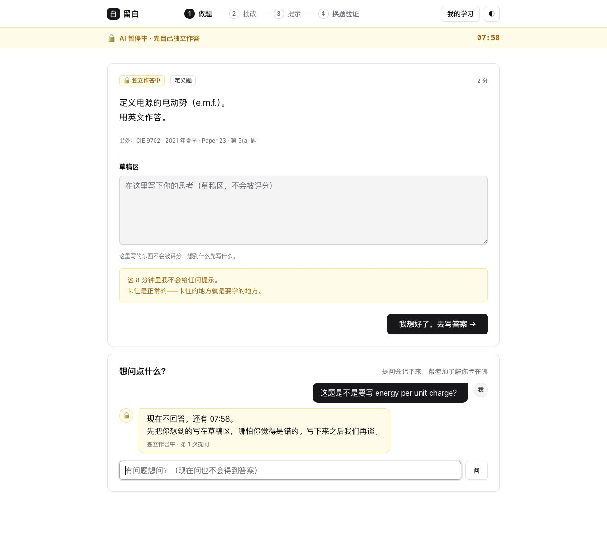

AI LEARNING PROTOTYPE / 个人项目 · 2026.07–08
留白：AI 批改与辅导原型
学生先自己做题，AI 不插手；交卷后按考试局的官方评分标准逐个得分点批改；没拿满分时只追问、给提示，不直接给答案；最后换一道新题，看学生是不是真的懂了。
为什么做这个
AI 辅导最常见的问题，是帮得太早、太多。学生一卡住就拿到答案，作业做对了，考试还是不会。Bastani 等人 2025 年发表在 PNAS 上的研究发现，不加限制地用 GPT 辅助练习的学生，期末成绩比对照组低约 17%；限制成“只给提示、不给答案”之后，这种负面影响基本消失。
教学里还有一个老问题：答对了不等于懂了。学生可能是背出来或猜对的，换一道题就错。普通的批改只看答案对不对，看不出这一点。
学生会经历的流程
深色的两步 AI 完全不参与：系统不会调用模型，学生提问只会收到“现在不回答”。
- 前置检查先确认基础知识，不会就退回去补
- 独立做题AI 锁定，限时作答
- 逐点批改按评分标准逐个得分点判，并标出依据
- 分级提示最多 4 级追问，到顶也不给答案
- 换题验证换一道真题，AI 再次锁定
- 结束5 项条件都满足才算掌握，30 天后再测


截图来自本地运行的原型（2026 年 10 月改版后的界面），接入 DeepSeek 模型。
三个关键设计
AI 什么时候闭嘴，写成规则
每个阶段规定 AI 能做什么。独立做题和换题验证阶段什么都不能做，连模型都不调用；提示最多 4 级。这样“不给答案”是可以测试、可以检查的，不靠模型自觉。
判断“懂没懂”，不只看对错
作答分成“结论”和“理由”两部分，再加上学生自己估计的把握程度。答案对、理由错、还很有把握，说明学生有一个很顽固的误解，要重点处理。
每一分都能查到依据
把官方评分标准拆成一条条得分点，写清必须出现的词、可以接受和不能接受的说法、哪些点之间有前后依赖。模型只判断“这句话有没有表达出这个意思”，分数由规则计算。
批改测试：7 个大模型
用 16 份真实学生作答（CIE 10 份、Edexcel 6 份，共 34 分）测试，以我按评分标准复核后的分数为准。
| 模型 | 总分完全一致 | 得分点一致 | 有前后依赖的题 |
|---|---|---|---|
| qwen3-14b | 14 / 16（87.5%） | 82.4% | 2 / 2 |
| deepseek-v4-flash | 13 / 16（81.3%） | 88.2% | 2 / 2 |
| deepseek-v4-pro | 13 / 16（81.3%） | 85.3% | 2 / 2 |
| qwen-plus | 13 / 16（81.3%） | 79.4% | 2 / 2 |
| qwen3-max | 13 / 16（81.3%） | 79.4% | 2 / 2 |
| qwen3-235b-a22b | 13 / 16（81.3%） | 79.4% | 2 / 2 |
| qwen3-32b | 13 / 16（81.3%） | 76.5% | 2 / 2 |
看到的三件事
- 模型大小不是关键。7 个模型成绩几乎一样，参数小得多的 qwen3-14b 并不比大模型差。
- 错的总是同几道题，而且原因都不在模型。所有模型都错了同样 2 道，6 个模型还多错同 1 道。逐题查下来：
前两题要把“严判还是宽判”明确规定下来，第三题要补一条规则。都是评分标准该定清楚的事，换更大的模型解决不了。
题目 系统 / 复核 原因 WPH14 Oct 2023 Q22(a) 0 / 1 评分尺度学生没写出“竖直方向”。系统按标准严判 0 分；我复核时也觉得是边界情况，沿用了原来的宽松给分。 WPH16 Oct 2021 Q3(a) 1 / 2 评分尺度同样是严判和宽判的差别，复核时也标为边界情况。 WPH15 May 2022 Q16(a)(ii) 1–2 / 0 规则没做卷面上同时留着错误结论和正确算式，考官看不出哪个是最终答案，给 0 分。“最终结论不明确”这条规则还没做进系统。 - 前后依赖的题，规则比人工批改更稳。有 2 道题规定“前一个得分点没拿到，后一个也不能给分”。最初的人工批改两题都多给了 1 分，复核后改成 0 分；7 个模型全部判对。
还不成熟的地方
- 只测了 16 份作答，能看出方向，但不能代表大规模使用时的准确率。
- 标准分数只有我一个人复核，还没有第二位老师独立批改来对照。
- 系统里已收录的 11 份 CIE 评分标准，只核对过抄得对不对，还没有用学生作答测过批得准不准。
- 很多 CIE 真题原卷带电路图，目前用文字描述代替。
- 还没有学生实际使用的数据，也还不能多人同时使用。
下一步：把测试扩大到 100 道以上的解释题，请第二位老师独立批改；把“严判 / 宽判”做成可以选择的设置；找几位学生试用，看他们卡在哪一步、哪一级提示真正有用。
我做了什么
我负责
产品设计、学习流程、评分标准拆解、测试题的选取和复核、错题原因分析，以及所有功能的验收。
AI 辅助完成
代码用 AI 编程工具写。我写需求和接口说明，检查实现是否符合设计，用测试把关（133 个单元测试和完整流程测试）。